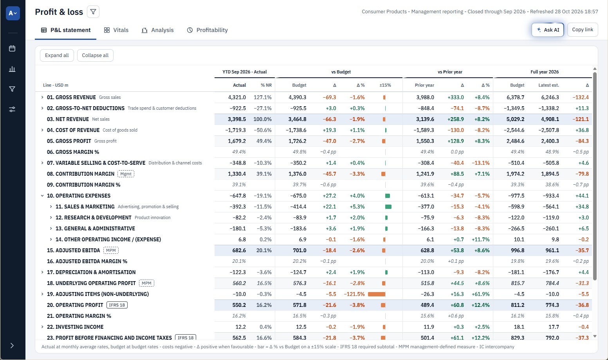
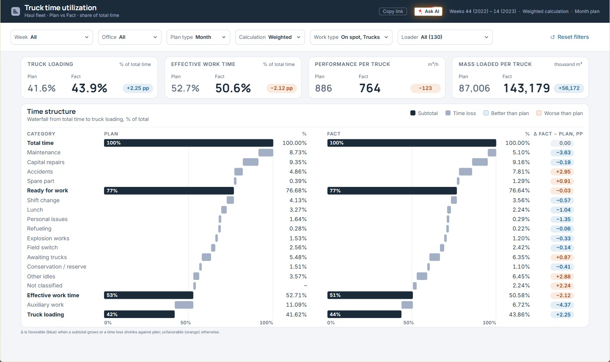
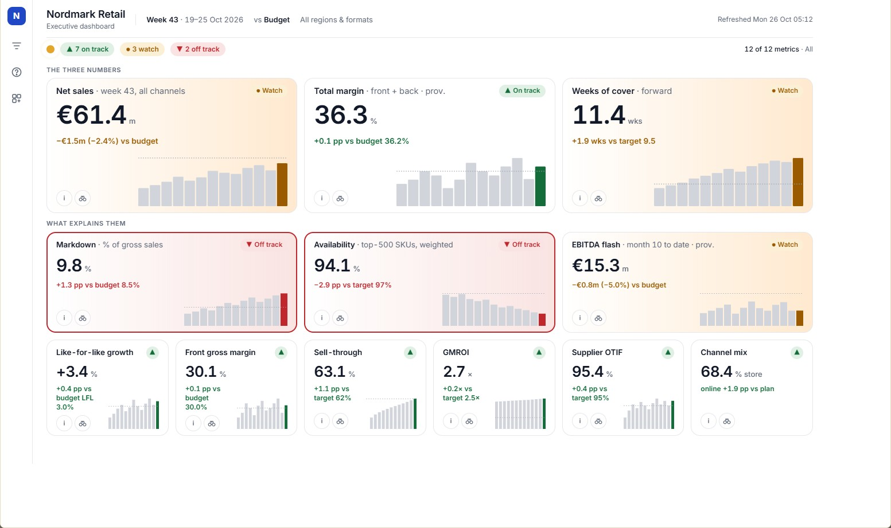
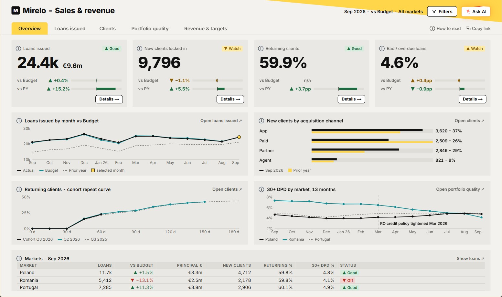
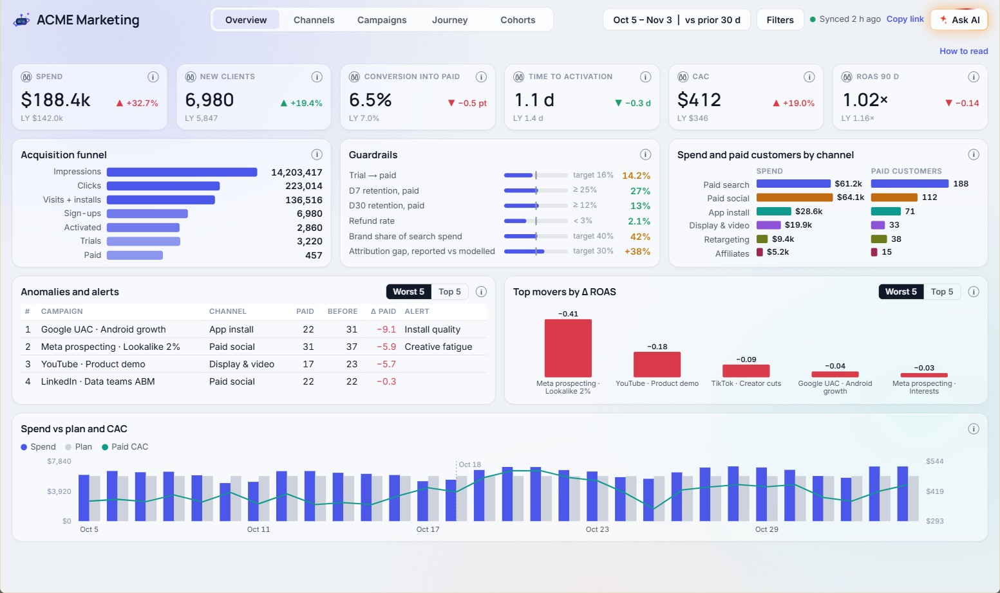

P1 setup: finish today
Work top to bottom, starting with Contra. Your ticks are saved in this browser. About 2 h 50 min left, my estimate.
P1 sites: where you stand
Standing on 11-13: 3 done, 3 partial, 1 registered, empty, 4 not started, 1 unknown. “Today” counts your ticks below.
| # | Site | Standing | Micro-guide | Today |
|---|---|---|---|---|
| 1 | Microsoft Learn transcript | Done | Live. The URL shows the name Bezzubkin. | done |
| 2 | Done | Complete, written as your client landing. | done | |
| 3 | Contra | Partial | Rate, bio, skills, 7 services, 5 projects. | |
| 4 | Upwork | Registered, empty | Title, $50/hr, overview, 14 skills, 5 portfolio items, 5 jobs, photo, ID last. | |
| 5 | Arc.dev | Not started | Sign up as talent, upload the CV, paste the bio, search the Turkey board. | |
| 6 | Himalayas | Not started | Account, bio, alerts for Fabric and Power BI in Turkey. | |
| 7 | Workable | Partial | Sign up, upload the CV, search Power BI and Fabric. Two of today’s leads apply through it. | |
| 8 | Harnham | Not started | Upload the CV, message a contract consultant. | |
| 9 | Nigel Frank | Done | Applied or messaged (you, 11-13). Follow up on day 5–7 if no reply. | done |
| 10 | Toptal | Not started | Apply, ask about Turkey and a BI track at the first screen. | |
| 11 | Easystaff | Unknown | Sign up, fill in the Connect profile. | |
| 12 | vosk.dev | Partial | Four decisions from you, then I make the change. |
C:\__VOSK__\docs\job\cv\Kirill_Vosk_BI_Engineer_CV.pdf. Report covers: C:\__VOSK__\docs\job\portfolio.Step by step
Contra
It shows $25–$50/hr now, below your floor.
- Reports nobody trusts, numbers that differ between teams, deployments done by hand: that's the work I take on. I build on Microsoft Fabric and Power BI, from raw data to the report people open on Monday: Power BI to Fabric migrations, Direct Lake models, dbt, RLS, Git CI/CD and chat with your data. I built a company's Fabric platform end to end and secured BI distribution for 300+ users. Regular reporting and ad-hoc delivery dropped from 1-2 days to a few hours. Fixed price or monthly retainer. Remote from Turkey, on EU and UK hours.
- Microsoft Power BI, Microsoft Fabric, DAX, Data Modeling, SQL, PostgreSQL, dbt, Data Warehousing, ETL Pipeline, Business Intelligence, Dashboard, Data Visualization, Azure DevOps, Apache Superset
Take the nearest ones Contra offers.
- Price$1,200, one-timeCoverpnl-suite.jpgFabric migration assessmentThinking of moving Power BI to Fabric and not sure what it will cost or break? In one week I review your workspaces, models, refresh patterns and capacity, then tell you what to move, in what order, and what to leave alone. You get: an inventory of reports and models, a risk list, a migration plan with effort per model, a capacity recommendation, and a 60-minute walkthrough. I need: read access to the workspaces and one person who knows the reports.Business Intelligence, Data Engineer, Data Analyst Power BI, Microsoft Fabric, dbt, SQL, Azure DevOps

pnl-suite.jpgSame tags on all seven: first line for your role, second for tools. Take the nearest ones Contra offers.
Press Publish.
- Price$2,400 per model, one-timeCovermining-time-utilization.jpgDirect Lake migrationYour import model takes too long to refresh, or has grown too big to handle. In two weeks I move one semantic model to Direct Lake on OneLake and prove the numbers still match. You get: Lakehouse or Warehouse tables shaped for the model, the migrated model with DAX and RLS carried over, a reconciliation against the old model, and handover notes. I need: workspace access on a Fabric capacity and the model's owner for questions.Business Intelligence, Data Engineer, Data Analyst Power BI, Microsoft Fabric, dbt, SQL, Azure DevOps

mining-time-utilization.jpgPress Publish.
- Price$1,200, one-timeCoverexecutive-dashboard.jpgCI/CD setup for Power BI and FabricIf a release means someone publishing a file by hand, this is for you. In one week I put your Power BI and Fabric work under Git and set up promotion from dev to test to production. You get: Git integration with Azure DevOps, a deployment pipeline across three environments, connection rules per environment, and a short runbook for your team. I need: admin rights on the workspaces and access to your Azure DevOps project.Business Intelligence, Data Engineer, Data Analyst Power BI, Microsoft Fabric, dbt, SQL, Azure DevOps

executive-dashboard.jpgPress Publish.
- Price$900, one-timeCovermining-time-utilization.jpgPower BI model tune-upA slow report, a slow refresh, DAX nobody wants to touch. In 3 to 5 days I find what is costing the time in one semantic model and fix it. You get: before and after timings, a cleaner model, rewritten measures, an RLS check, and a list of what to watch next. I need: access to the model and the two or three report pages people complain about.Business Intelligence, Data Engineer, Data Analyst Power BI, Microsoft Fabric, dbt, SQL, Azure DevOps
mining-time-utilization.jpgPress Publish.
- Price$2,800, one-timeCoveronline-sales-report.jpgdbt multi-source foundationData from several systems, and every team adds it up differently. In 2 to 3 weeks I build a tested dbt layer that gives them one source of truth. You get: dbt models from staging to marts for the agreed sources, tests on keys and totals, documentation, a Git repository and scheduled runs. I need: read access to the sources and someone who can say what each number should be.Business Intelligence, Data Engineer, Data Analyst Power BI, Microsoft Fabric, dbt, SQL, Azure DevOps

online-sales-report.jpgPress Publish.
- Pricefrom $1,500, one-timeCovermarketing-acquisition-dashboard.jpgAI automation: chat with your data, reports and alertsRoutine reports and checks someone still does by hand, or managers who want to ask the data a question. In 1 to 2 weeks I automate one workflow, with answers that come from your own governed numbers. You get: a working automation or Fabric Data Agent on your semantic model, a test set of questions with checked answers, and handover notes. I need: access to the data and the questions people ask most. The price is fixed after a short scoping call.Business Intelligence, Data Engineer, Data Analyst Power BI, Microsoft Fabric, dbt, SQL, Azure DevOps

marketing-acquisition-dashboard.jpgPress Publish.
- Price$650, one-timeCoverexecutive-dashboard.jpgPower BI and Fabric auditNot sure why the numbers disagree, or what is safe to change? In three days I review one Power BI or Fabric environment and tell you what is wrong, ranked by what it costs you. You get: a written report on model quality, security, refresh and deployment, ranked fixes with effort, and a 30-minute call. I need: read access to the environment.Business Intelligence, Data Engineer, Data Analyst Power BI, Microsoft Fabric, dbt, SQL, Azure DevOps
executive-dashboard.jpgPress Publish.
- Lender's Sales & Revenue reportLoans, clients, portfolio quality and revenue vs budget for an online lender in three markets. Built in Power BI and as a web report with an AI chat that answers from the report's numbers. Demo on synthetic data.https://vosk.dev/work/online-sales-report
online-sales-report.jpg - Marketing dashboard for a SaaSSpend, CAC, ROAS, conversion into paid and cohort payback by channel and campaign. Built in Power BI and as a web report with an AI chat. Demo on synthetic data.https://vosk.dev/work/marketing-acquisition-dashboard
marketing-acquisition-dashboard.jpg - Coal mining machinery time utilizationWhere a mining fleet's 24/7 hours go, from calendar time down to effective work, against plan. Built in Power BI and as a web report with an AI chat. Real operating figures, names anonymised.https://vosk.dev/work/mining-time-utilization
mining-time-utilization.jpgChange this label if it isn’t client work you can stand behind.
- Management P&L reportBudget vs actual P&L for two companies: statement, KPIs, variances, bridges, profitability. Web report with an AI chat. Demo on synthetic data.https://vosk.dev/work/pnl-suite
pnl-suite.jpg - Retail executive dashboardTwelve retail KPIs vs budget, last year or previous period, by region and category. Web report. Demo on synthetic data.https://vosk.dev/work/executive-dashboard
executive-dashboard.jpg Rate, bio, seven services and five projects should all show. Then tell me “Contra done”.
Upwork
- Microsoft Fabric & Power BI Engineer, DP-600 | One source of truth
Set $50.00 per hour.
- Reports nobody trusts, numbers that differ between teams, deployments done by hand: that's the work I take on. I'm a BI engineer with Microsoft's DP-600 certification for Fabric, and I build the whole path from raw data to the report people open on Monday. I built a company's Microsoft Fabric platform end to end and secured BI distribution for 300+ users. Regular reporting and ad-hoc delivery dropped from 1-2 days to a few hours. Fixed-price work I offer: Fabric migration assessment, 1 week, $1,200 Direct Lake migration, 2 weeks, $2,400 per model CI/CD setup for Power BI and Fabric, 1 week, $1,200 Model tune-up, 3 to 5 days, $900 dbt multi-source foundation, 2 to 3 weeks, $2,800 AI automation, such as chat with your data, 1 to 2 weeks, from $1,500 Audit, 3 days, $650 Monthly retainers start at $1,500 for about 40 hours. I work in Fabric Lakehouse and Warehouse, OneLake, Direct Lake, semantic models, DAX, RLS, Dataflows Gen2, pipelines, dbt, SQL and PostgreSQL, with Git CI/CD through Azure DevOps. I'm in Turkey, remote, on EU and UK hours. Send me what's broken and I'll tell you what it would take.
Don’t add a website or email here. Upwork removes off-platform contact details.
- Microsoft Power BI, Microsoft Fabric, DAX, Data Modeling, SQL, PostgreSQL, dbt, Data Warehousing, ETL Pipeline, Business Intelligence, Dashboard, Data Visualization, Azure DevOps, Apache Superset
- Lender's Sales & Revenue reportLoans, clients, portfolio quality and revenue vs budget for an online lender in three markets. Built in Power BI and as a web report with an AI chat that answers from the report's numbers. Demo on synthetic data.https://vosk.dev/work/online-sales-report
online-sales-report.jpg - Marketing dashboard for a SaaSSpend, CAC, ROAS, conversion into paid and cohort payback by channel and campaign. Built in Power BI and as a web report with an AI chat. Demo on synthetic data.https://vosk.dev/work/marketing-acquisition-dashboard
marketing-acquisition-dashboard.jpg - Coal mining machinery time utilizationWhere a mining fleet's 24/7 hours go, from calendar time down to effective work, against plan. Built in Power BI and as a web report with an AI chat. Real operating figures, names anonymised.https://vosk.dev/work/mining-time-utilization
mining-time-utilization.jpg - Management P&L reportBudget vs actual P&L for two companies: statement, KPIs, variances, bridges, profitability. Web report with an AI chat. Demo on synthetic data.https://vosk.dev/work/pnl-suite
pnl-suite.jpg - Retail executive dashboardTwelve retail KPIs vs budget, last year or previous period, by region and category. Web report. Demo on synthetic data.https://vosk.dev/work/executive-dashboard
executive-dashboard.jpg - TitleBusiness Intelligence DeveloperCompanyISS Global ForwardingDetailsJuly 2024 - Present | Turkey | International freight forwarding and logistics | Reports to CIOBuilt the company's Microsoft Fabric platform end to end: dbt models, Git version control, automation and reporting. Cut regular reporting and ad-hoc delivery from 1-2 days to a few hours, with data available in one place. Implemented a corporate security solution for BI consumption and distribution serving 300+ users. Delivered 10+ reports covering operations and shipment tracking, AP/AR, client analysis and sales KPIs. Deployed Fabric Data Agents for plain-language querying of semantic models; agentic development on top of Fabric. Built DAX and SQL monitoring of sales KPIs and customer-facing embedded reporting. Delivered client-facing reporting and Excel solutions for one of the largest companies in the world. Optimized ETL, data freshness and report performance.
- TitleBusiness Intelligence DeveloperCompanyFingularDetailsOctober 2023 - September 2026 | Digital banking and micro-lending fintech, Asia and Middle East | Reported to Head of AnalyticsOwned BI for the lending product: portfolio, disbursements, repayments and delinquency in Power BI. Built self-service reporting that gave product, risk and operations one set of numbers. Automated customer support reporting on volumes, handling time and resolution rates, cutting ad-hoc data requests.
These dates overlap ISS. Keep them only if both jobs really ran together.
- TitleLead BI DeveloperCompanyRealWeb Digital AgencyDetailsJuly 2022 - August 2023 | Moscow, Russia | Digital marketing agency serving major retail and banking groups | Reported to Head of AnalyticsBuilt pipelines from raw ad and lead data (Facebook, Google Ads) to client Power BI dashboards. Modeled ad and lead data with dbt into reusable, tested client-ready marts. Standardized templates, cutting new-client setup from weeks to days. Delivered 5 dashboards on spend, CPL, CPA and funnels, and drove budget reallocation recommendations. Advised clients on banking app promotion (CPI, install-to-registration, first transaction, early retention) and retail web products (search-to-cart, zero-result rate, card CTR). Set up Google Tag Manager and Google Analytics; trained junior analysts on BI tools.
- TitleBusiness Intelligence LeadCompanyPole.rfDetailsJanuary 2021 - June 2022 | Moscow, Russia | Agri-tech marketplace for seeds, fertilizers and machinery | Reported to CEOFirst data hire: built the analytics function from zero and later managed two junior BI developers. Set up the VM, database and scheduled ETL from 10+ sources (CRM, e-commerce, web analytics, ads). Automated about 50% of recurring reporting and enabled campaign-level ROI tracking. Delivered marketing, sales and campaign dashboards used for weekly management decisions. Built Telegram bots pushing daily KPIs to 5 sales managers.
- TitleBI DeveloperCompanyCitilinkDetailsMarch 2018 - December 2020 | Moscow, Russia | One of Russia's largest electronics e-retailers | Reported to Head of AnalyticsMigrated about 80% of Excel reporting to Power BI. Built customer service SLA dashboards for 12 regional teams; SLA breaches fell about 10%. Built AP/AR reporting in Power BI, replacing month-end Excel with daily overdue-debt visibility. Built anti-fraud monitoring for sales, bonus abuse and warehouse theft across dozens of locations. Mentored junior analysts and BI developers on Power BI and Excel.
- DegreeMaster of Science, FinanceSchoolMoscow State University
Set English to Fluent. Add Russian too.
- Microsoft Certified: Fabric Analytics Engineer Associate (DP-600)
The transcript link shows the name Bezzubkin. Leave the link out unless you’re happy for clients to see it.
A clear head shot. You may need it again on other sites.
Upwork matches your verified name to your ID, and your legal name appears on invoices and in contract rooms. If the surname on your passport isn’t Vosk, tell me before you start this step.
Arc.dev
- C:\__VOSK__\docs\job\cv\Kirill_Vosk_BI_Engineer_CV.pdf
- Reports nobody trusts, numbers that differ between teams, deployments done by hand: that's the work I take on. I'm a BI engineer with 8+ years in the field and Microsoft's DP-600 certification for Fabric. I build the whole path from raw data to the report people open on Monday: Lakehouse and Warehouse, Direct Lake semantic models, DAX, row-level security, dbt, and Git-based deployment through Azure DevOps. I built a company's Microsoft Fabric platform end to end and secured BI distribution for 300+ users. Regular reporting and ad-hoc delivery dropped from 1-2 days to a few hours. I also deploy Fabric Data Agents, so people can ask a semantic model questions in plain language. I work with companies on fixed-price projects and monthly retainers, and I'm open to senior remote roles. Live reports you can click through are at vosk.dev/work, four of them with an AI chat that answers from the report's own numbers. Based in Turkey, remote, EU and UK hours. vosk.dev@gmail.com
https://arc.dev/en-tr/remote-jobs
Send me anything worth a look.
Himalayas
- Reports nobody trusts, numbers that differ between teams, deployments done by hand: that's the work I take on. I'm a BI engineer with 8+ years in the field and Microsoft's DP-600 certification for Fabric. I build the whole path from raw data to the report people open on Monday: Lakehouse and Warehouse, Direct Lake semantic models, DAX, row-level security, dbt, and Git-based deployment through Azure DevOps. I built a company's Microsoft Fabric platform end to end and secured BI distribution for 300+ users. Regular reporting and ad-hoc delivery dropped from 1-2 days to a few hours. I also deploy Fabric Data Agents, so people can ask a semantic model questions in plain language. I work with companies on fixed-price projects and monthly retainers, and I'm open to senior remote roles. Live reports you can click through are at vosk.dev/work, four of them with an AI chat that answers from the report's own numbers. Based in Turkey, remote, EU and UK hours. vosk.dev@gmail.com
- Microsoft FabricPower BI
Location: Turkey, on both.
Workable (Jobs by Workable)
Sign Up is top right. LinkedIn or Microsoft also work.
- C:\__VOSK__\docs\job\cv\Kirill_Vosk_BI_Engineer_CV.pdf
Workable reads the CV into the profile. Fix any field it got wrong. Avatar, then My Profile.
- Reports nobody trusts, numbers that differ between teams, deployments done by hand: that's the work I take on. I'm a BI engineer with 8+ years in the field and Microsoft's DP-600 certification for Fabric. I build the whole path from raw data to the report people open on Monday: Lakehouse and Warehouse, Direct Lake semantic models, DAX, row-level security, dbt, and Git-based deployment through Azure DevOps. I built a company's Microsoft Fabric platform end to end and secured BI distribution for 300+ users. Regular reporting and ad-hoc delivery dropped from 1-2 days to a few hours. I also deploy Fabric Data Agents, so people can ask a semantic model questions in plain language. I work with companies on fixed-price projects and monthly retainers, and I'm open to senior remote roles. Live reports you can click through are at vosk.dev/work, four of them with an AI chat that answers from the report's own numbers. Based in Turkey, remote, EU and UK hours. vosk.dev@gmail.com
- Microsoft FabricPower BI
I couldn’t confirm it has job alerts. Save them if it offers. World Business Lenders and Shiftmove take applications here.
Harnham
https://www.harnham.com/contract-freelance-data/
C:\__VOSK__\docs\job\cv\Kirill_Vosk_BI_Engineer_CV.pdfPick the data and BI disciplines.
- Hi [Name], BI engineer with a Microsoft Fabric focus, DP-600 certified, based in Turkey. Looking for fully remote contract roles on EU/UK hours, 1 to 3 months is fine. Day rate from $400. Do you place contractors based in Turkey? Happy to send a CV.
Replace [Name].
Toptal
https://www.toptal.com/talent/apply
C:\__VOSK__\docs\job\cv\Kirill_Vosk_BI_Engineer_CV.pdf- I’m based in Turkey and work in Microsoft Fabric and Power BI. Before we go further: do you accept Turkey-based members, and do you have a track for BI and data engineering?
Easystaff
- Reports nobody trusts, numbers that differ between teams, deployments done by hand: that's the work I take on. I'm a BI engineer with 8+ years in the field and Microsoft's DP-600 certification for Fabric. I build the whole path from raw data to the report people open on Monday: Lakehouse and Warehouse, Direct Lake semantic models, DAX, row-level security, dbt, and Git-based deployment through Azure DevOps. I built a company's Microsoft Fabric platform end to end and secured BI distribution for 300+ users. Regular reporting and ad-hoc delivery dropped from 1-2 days to a few hours. I also deploy Fabric Data Agents, so people can ask a semantic model questions in plain language. I work with companies on fixed-price projects and monthly retainers, and I'm open to senior remote roles. Live reports you can click through are at vosk.dev/work, four of them with an AI chat that answers from the report's own numbers. Based in Turkey, remote, EU and UK hours. vosk.dev@gmail.com
Same titles, texts and links as on Contra, if the form has a portfolio.
vosk.dev
- Secured BI distribution for 300+ users. Reporting and ad-hoc delivery cut from 1-2 days to a few hours.
Seven packages, the same prices as Contra.
The site says $300+, your outreach says $450 for 48 h. Pick one.
The card says TBD, and it’s the first thing a hiring manager prices.
I make the change and give you the git block.